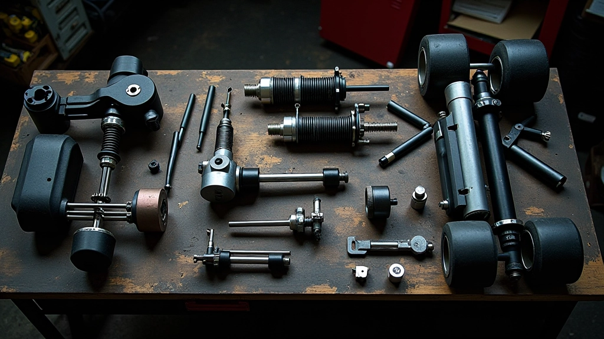

قياس ضغط الإطارات
الأداة المناسبة، توقيت القياس، والفرق العملي بين القراءة الباردة والساخنة على أداء الكارت.
اقرأ الدليل ←هنا نشرح الجانب الميكانيكي من الكارتينج بلغة يفهمها السائق لا المهندس فقط: كيف يُقاس ضغط الإطار بشكل صحيح، ماذا تعني معايرة التعليق عملياً، وكيف تقرأ ظروف الحلبة قبل أن تلمس مفتاح ربط واحداً.

أربع مهارات يحتاجها أي سائق يريد أن يفهم الكارت بدل أن يعتمد على شخص آخر في كل تعديل.
متى تقيس (بارد أم ساخن)، بأي أداة، وكيف تفسّر الفرق بين إطار وآخر على نفس المحور.
الكامبر والتو والكاستر: ما الذي يغيّره كل منها في سلوك الكارت، وأي منها تعدّل أولاً.
حرارة السطح، نسبة المطاط المتراكم، والرطوبة — ثلاثة عوامل تغيّر الإعداد المثالي في اليوم نفسه.
ما يجب فحصه في الساعة الأولى بعد النزول من الحلبة، وما يمكن تأجيله بأمان للأسبوع التالي.
طريقة منظمة تمنع التعديلات العشوائية التي تفسد أكثر مما تصلح.
قبل أي تعديل، دوّن الضغط والزوايا والأزمنة الحالية. من دون نقطة مرجعية لن تعرف ما الذي نجح.
تعديل شيئين معاً يجعل تفسير النتيجة مستحيلاً. متغير واحد، ثم جولة قياس.
قارن اللفات في نفس حالة الإطار والحلبة قدر الإمكان، وإلا كانت المقارنة بلا معنى.
دفتر إعداد بسيط يتحول خلال موسم إلى مرجعك الخاص الأدق من أي جدول عام.
لقطات من الورشة توضح الأدوات والقياسات التي نتحدث عنها في الأدلة.
 قياس الضغط على إطار بارد
قياس الضغط على إطار بارد

مكونات نظام التعليق ترتيب طاولة الصيانة
ترتيب طاولة الصيانة
 جدول الصيانة الدورية
جدول الصيانة الدورية
ابدأ من القياس، ثم انتقل إلى المعايرة والصيانة.
الأداة المناسبة، توقيت القياس، والفرق العملي بين القراءة الباردة والساخنة على أداء الكارت.
اقرأ الدليل ←شرح الكامبر والتو والكاستر بلغة السائق، مع ترتيب منطقي للتعديلات وجدول قيم مرجعية.
اقرأ الدليل ←كيف تغيّر حرارة السطح ونسبة المطاط والرطوبة إعدادك المثالي خلال اليوم نفسه.
اقرأ الدليل ←قائمة فحص مرتبة بالأولوية: ما يجب فعله فوراً، وما يمكن تأجيله دون مخاطرة.
اقرأ الدليل ←ما يتكرر من أسئلة السائقين حول إعداد الكارت.
ابدأ دائماً بقراءة باردة كنقطة مرجعية ثابتة، ثم سجّل القراءة الساخنة بعد الجولة لتعرف مقدار الارتفاع. الفرق بين القراءتين يخبرك أكثر مما تخبرك أي منهما وحدها.
ابدأ بالضغط قبل الزوايا. تعديل الضغط أسرع وأسهل في التراجع عنه، وكثير من مشاكل الاستقرار سببها فرق ضغط بسيط بين جانبين.
لا. مقياس ضغط رقمي جيد ومقياس زوايا بسيط يغطيان معظم ما تحتاجه. الدقة في الاستخدام أهم من سعر الأداة.
راجع الضغط قبل كل جولة، والزوايا بعد أي اصطدام أو تغيير في المكونات، والفحص الشامل بعد كل يوم سباق.
لا. كل حلبة وكل إطار وكل حالة طقس تنتج نقطة مثالية مختلفة. الجداول المنشورة نقطة انطلاق، لا وصفة نهائية.
أرسل لنا قراءاتك الحالية ووصف سلوك الكارت على الحلبة، وسنقترح الخطوة التالية المنطقية بدل تخمين عشوائي.
اتصل بنا